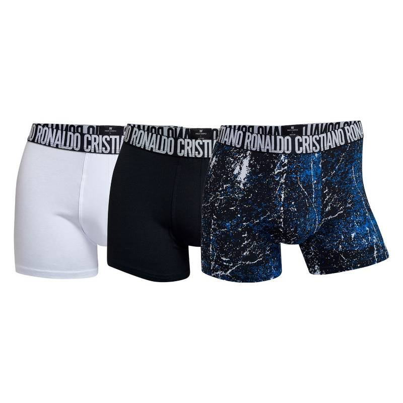
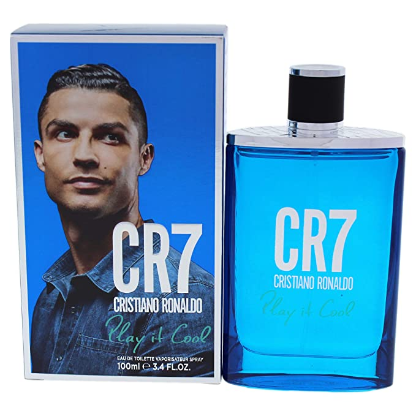
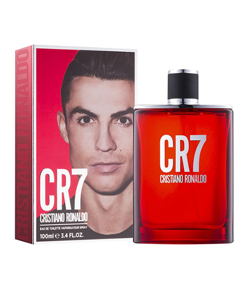
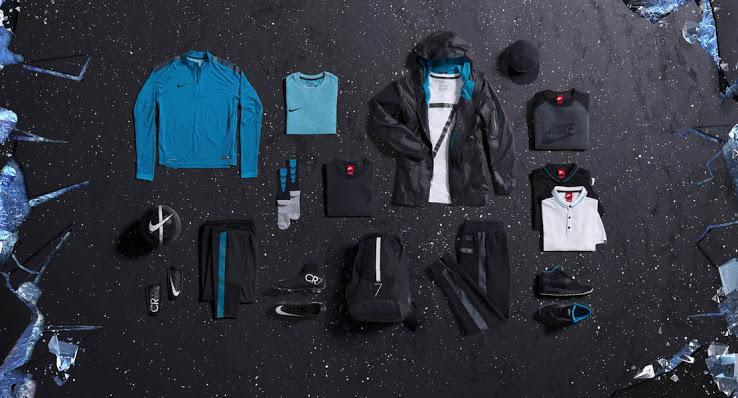

Cristiano Ronaldo es un futbolista - Coaching - Modelo
Cristiano Ronaldo dos Santos Aveiro, más conocido como Cristiano Ronaldo, Cr7, El bicho, El comandante, Mr Champions, Entre otros, es un futbolista portugués que juega como delantero en el Manchester United Football Club de la Premier League de Inglaterra y en la selección de Portugal, de la cual es su capitán y máximo goleador histórico, ademas es el goleador historico de futbol en partidos oficiales con 807 goles, Tambien el jugador con mas goles en el real madrid con 451 goles, entre muchos mas logros, como ser el maximo campeòn en el nuevo formato de champions con 5 y siendo tambien el maximo goleador y asistidor de este torneo.
Ver mas...Ropa Interior

Locion Azul

Locion Roja

Ropa

Estoy de acuerdo con Terminos y Condiciones